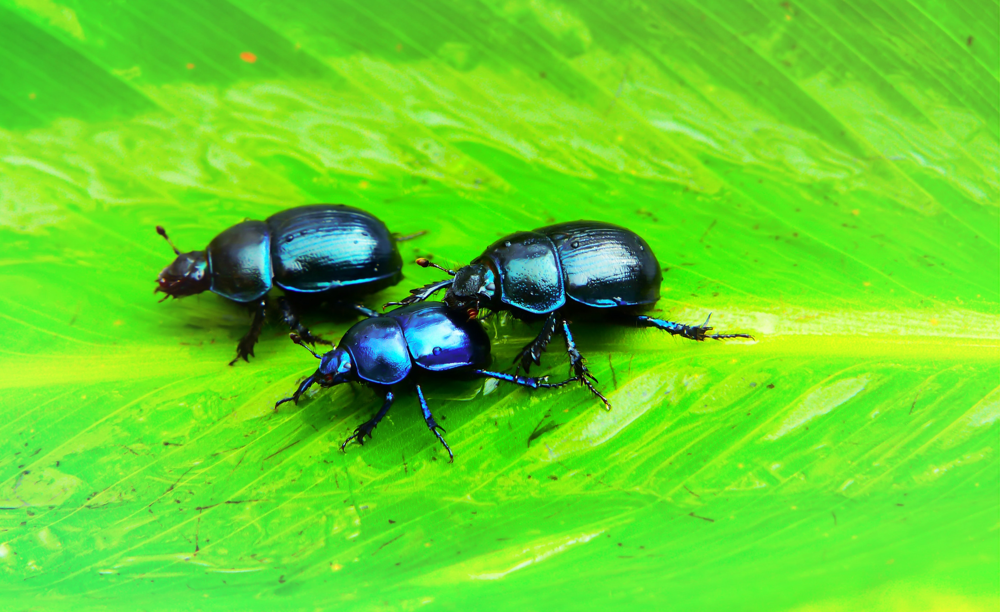

Select the Animal that you would like to learn about
Learn about Turtles

Turtles have a hard shell that protects them like a shield, this upper shell is called a 'carapace'. Turtles also have a lower shell called a 'plastron'. Many turtle species (not all) can hide their heads inside their shells when attacked by predators. Turtles have existed for around 215 million years.
The shell is made up of about 60 bones that are covered by plates called scutes. Scutes are made of keratin, the same material that makes up humans' fingernails. Many turtles are able to retract their heads and feet into their shells. ... Sea turtles have lost the ability to retract their heads.
Learn about Snakes

Snakes consume a variety of items including termites, rodents, birds, frogs, small deer and other reptiles. Snakes eat their prey whole and are able to consume prey three times larger than the diameter of their head because their lower jaw can separate from the upper jaw.
Snakes consume a variety of items including termites, rodents, birds, frogs, small deer and other reptiles. Snakes eat their prey whole and are able to consume prey three times larger than the diameter of their head because their lower jaw can separate from the upper jaw. To keep prey from escaping, snakes have rear-facing teeth that hold their prey in their mouths.Venomous snakes inject their prey with venom, while constrictors squeeze their prey. They do not need to hunt everyday. Anacondas and pythons can survive for up to a year without food after feeding. Snakes hunt mostly at night.
Learn about Insects
nsects or Insecta are hexapod invertebrates and the largest group within the arthropod phylum. Definitions and circumscriptions vary; usually, insects comprise a class within the Arthropoda. As used here, the term Insecta is synonymous with Ectognatha
Insect bodies have three parts, the thorax, abdomen and head. Some insects, such as gerridae (water striders), are able to walk on the surface of water. Bees, termites and ants live in well organized social colonies. Silkworms are used as the primary producer of silk.